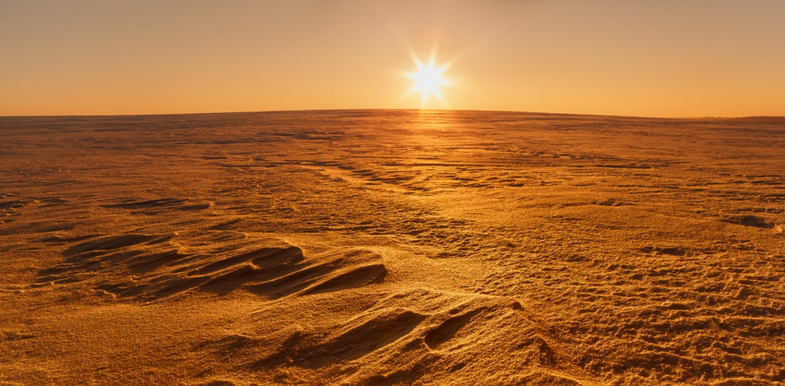
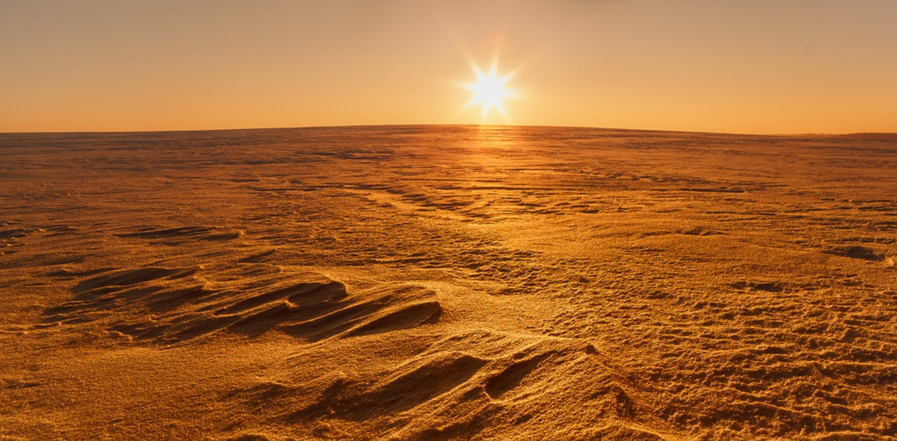

Mars – czwarta według oddalenia od Słońca planeta Układu Słonecznego. Nazwa planety pochodzi od imienia rzymskiego boga wojny – Marsa. Zawdzięcza ją swej barwie, która przy obserwacji z Ziemi wydaje się rdzawo-czerwona i kojarzyła się starożytnym rzymianom z pożogą wojenną. Postrzegany odcień wynika stąd, że powierzchnia planety zawiera tlenki żelaza. Mars jest planetą wewnętrzną z cienką atmosferą, o powierzchni usianej kraterami uderzeniowymi, podobnie jak powierzchnia Księżyca i wielu innych ciał w Układzie Słonecznym. Występują tu różne rodzaje terenu, podobne do ziemskich: wulkany, doliny, pustynie i polarne czapy lodowe. Okres obrotu wokół własnej osi jest niewiele dłuższy niż Ziemi i wynosi 24,6229 godziny (24 h 37 min 22s). Na Marsie znajduje się najwyższa góra w Układzie Słonecznym – Olympus Mons i największy kanion – Valles Marineris. Gładki obszar równinny Vastitas Borealis na półkuli północnej obejmuje 40% powierzchni planety i może być pozostałością ogromnego uderzenia. W przeciwieństwie do Ziemi, Mars jest geologicznie i tektonicznie nieaktywny.
Do czasu pierwszego przelotu sondy Mariner 4 obok Marsa w 1965 roku spekulowano na temat obecności ciekłej wody na powierzchni planety. Podstawą spekulacji były obserwowane okresowe zmiany jasności obszarów powierzchni, w szczególności w pobliżu biegunów, które w obserwacjach teleskopowych wydawały się morzami i kontynentami. Długie ciemne linie na powierzchni, nazwane kanałami marsjańskimi, były interpretowane przez niektórych jako kanały nawadniające wybudowane przez istoty rozumne. Ich obserwacje wytłumaczono później jako złudzenie optyczne, ale ze wszystkich planet w Układzie Słonecznym poza Ziemią, występowanie na Marsie wody, a tym samym warunków do życia, jest najbardziej prawdopodobne. Badania geologiczne zebrane przez bezzałogowe misje sugerują, że Mars miał kiedyś duże zasoby wody na powierzchni, a małe wypływy wód podobne do gejzerów mogły mieć miejsce w ciągu ostatniej dekady. W roku 2005 dane radarowe wykazały obecność dużych ilości lodu zarówno na biegunach, jak i na średnich szerokościach geograficznych. Lądownik Phoenix 31 lipca 2008 roku stwierdził bezpośrednio obecność wody w próbce regolitu, pobranej w okolicach biegunowych. 28 września 2015 roku NASA ogłosiła, że znaleziono dowody na obecność ciekłej słonej wody na powierzchni planety. W miesiącach letnich woda w stanie ciekłym spływa ze zboczy kanionów i ścian kraterów w postaci strug i pozostawia ciemne plamy, które mogą mieć długość do kilkuset metrów. Badacze uważają, że odkrycie to zwiększa prawdopodobieństwo istnienia życia na Marsie.
Mars ma dwa księżyce, Fobosa i Deimosa, które są małe i mają nieregularny kształt. Mogą one być przechwyconymi planetoidami, podobnymi do planetoidy trojańskiej (5261) Eureka, krążącej na orbicie planety, chociaż obecnie zyskuje na popularności hipoteza, że powstały one z materii wyrzuconej z Marsa. Wokół Marsa krąży pięć sztucznych satelitów, 2001 Mars Odyssey, Mars Express, Mars Reconnaissance Orbiter, Mars Orbiter Mission i MAVEN. Na powierzchni są aktywne łaziki Opportunity misji Mars Exploration Rover i Curiosity misji Mars Science Laboratory oraz kilka innych, nieaktywnych, lądowników z zarówno udanych, jak i nieudanych misji.
Mars może być łatwo dostrzeżony z Ziemi gołym okiem. W wielkiej opozycji względem Słońca, jego jasność osiąga -2,91; jasnością przewyższają go wówczas tylko Jowisz, Wenus, Księżyc i Słońce.
 
